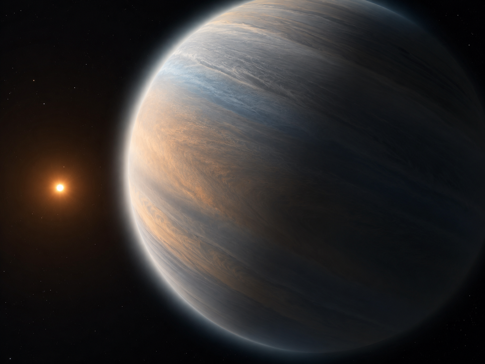
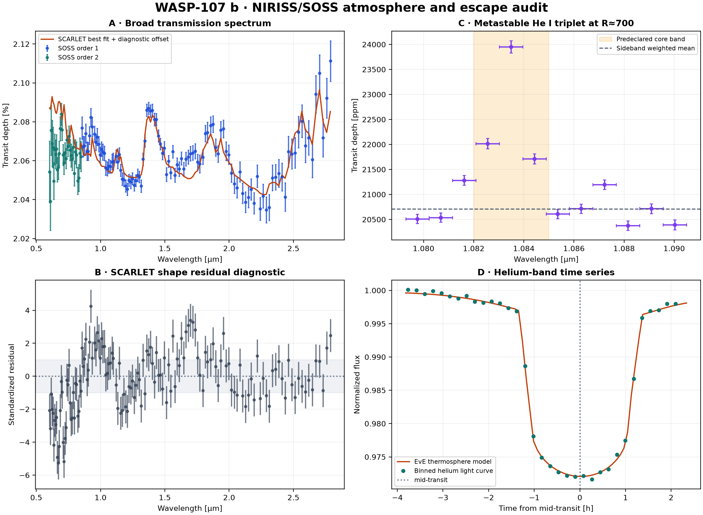
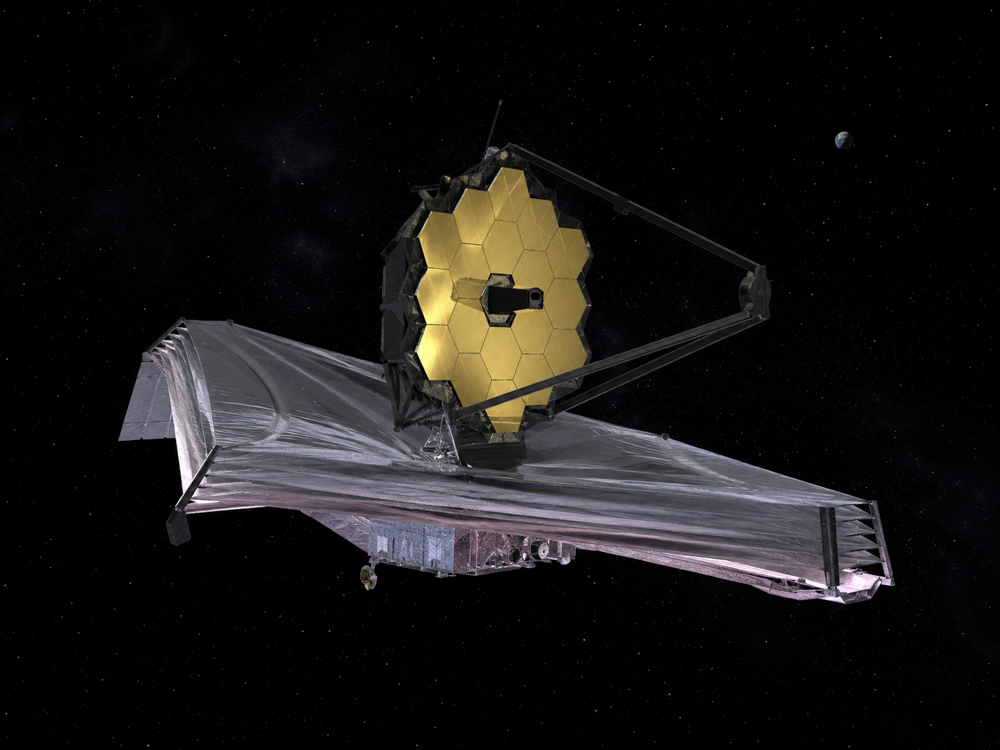

Exoplanet Atmosphere Report · JWST NIRISS SOSS
A low-density warm Neptune with a directly resolved metastable-helium signature and time-dependent absorption before, during, and after transit — an unusually detailed view of atmospheric escape.
AI-generated artist's concept of WASP-107 b — not a real photograph. All data and figures in this report come from actual JWST NIRISS SOSS observations (see below).
All values below are pulled directly from the NASA Exoplanet Archive composite parameters table (queried live via its TAP service), not approximated.
| Radius | 10.54 Earth radii (~0.94 Jupiter radii) |
|---|---|
| Mass | 30.5 Earth masses (~0.096 Jupiter masses) |
| Bulk density | ~0.13 g/cm³ — among the lowest-density planets known, roughly the density of cork |
| Orbital period | 5.72 days |
| Semi-major axis | 0.055 AU |
| Equilibrium temperature | 736 K |
| Host star | WASP-107, K-type dwarf, Teff = 4425 K, 0.657 Rsun, 0.683 Msun |
| Distance | 64.7 parsecs (~211 light-years) |
| Discovery | 2017, transit photometry (WASP survey) |
WASP-107 b's low mass paired with a Jupiter-scale radius gives it an unusually large atmospheric scale height — the same total temperature and gravity produce a much bigger, more observable signal per unit of atmospheric composition than a typical hot Jupiter. That combination made it an early, high-priority JWST target for atmospheric characterization.
Krishnamurthy et al. used NIRISS/SOSS to resolve the 1.083 µm metastable-helium triplet and follow helium-band absorption through time. They report absorption beginning about 1.5 hours before ingress, a 17σ pre-transit signal, a maximum depth of 2.395% ± 0.01%, and an EvE thermosphere model extending tens of planetary radii. Their atmosphere retrieval also detects water and attributes the short-wavelength slope primarily to unocculted stellar spots at 5.2σ, rather than simply to haze.
Longer-wavelength MIRI and NIRSpec studies provide complementary chemistry: sulfur dioxide, methane depleted relative to equilibrium, water, carbon dioxide, and carbon monoxide. Those results are panchromatic context; the analysis below is restricted to the six released NIRISS products.

AI-generated 3D-render-style concept of WASP-107 b's puffy atmosphere — not an actual image of the planet.
The complete Zenodo release contains more than the two broad spectral orders: it includes the SCARLET best-fit atmosphere model, a 12-bin R≈700 spectrum across the helium triplet, the binned helium light curve, and its EvE thermosphere model. The four panels keep broad atmospheric structure, narrow helium absorption, and time dependence as separate observables.

scripts/analyze_spectrum.py.The predeclared 1.082–1.085 µm core is 1685.4 ± 70.0 ppm above the remaining released R≈700 bins under a diagonal-error calculation. Its 24.1σ ratio is a compact reproduction diagnostic—not the paper's detection significance—because it does not include spectral covariance, time correlation, or a look-elsewhere correction. Use the publication's full analysis for physical inference.
The released SCARLET curve, after one diagnostic vertical offset, has standardized-residual RMS 1.826 against the same spectrum used for the retrieval. This is not independent validation or a Bayes factor. The EvE light-curve residual RMS is 312.1 ppm, but the archived light-curve table has no uncertainty column, so no calibrated goodness-of-fit probability is reported.
All six numeric inputs are unmodified products from Zenodo record 17085766. The manifest records the repository copies' normalized SHA-256 hashes and Zenodo's MD5 values. Run python scripts/validate_sources.py and then python scripts/analyze_spectrum.py. Results are available as structured JSON and bin-level CSV.

AI-generated illustration of JWST, whose NIRISS instrument obtained the spectra and helium time series analyzed above. Not an official mission photograph — see NASA Webb for mission imagery.